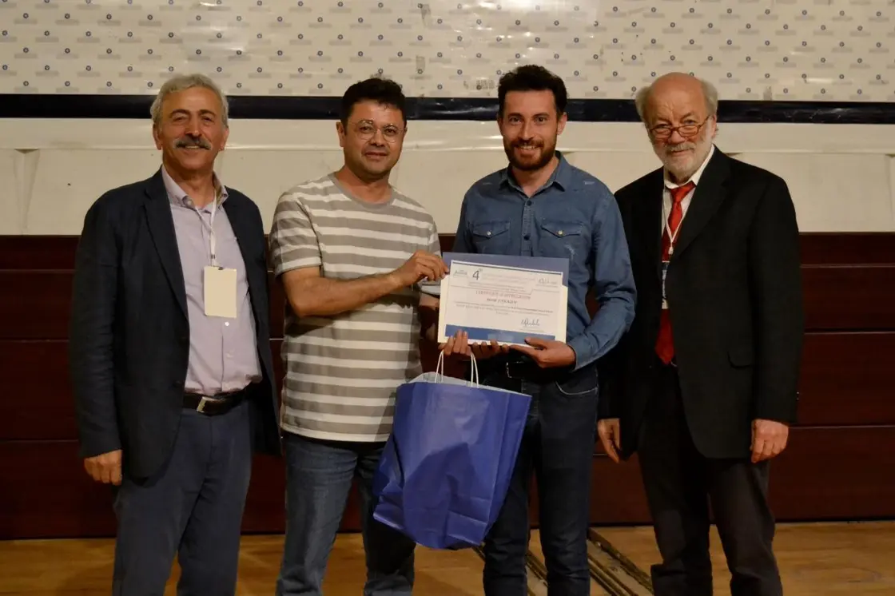

Presentations & Awards
Conferences I have presented at since 2018, the poster prize from ICLLT 2024, and the events I help organise.
Best Poster Award — ICLLT 2024
Ankara, 16–18 May 2024
My poster took first place for best poster at ICLLT 2024. The conference was organised by the Photonics Application and Research Center at Gazi University in Ankara, and ran from 16 to 18 May 2024.
The poster was “Object Detection with Deep Learning in Optical Tweezers Applications” (J. Farazin, M. Rahmani, F. Hajizadeh, E. Ahadi Akhlaghi). It showed an early part of my MSc work on guiding trapped particles automatically.
I received the award from Prof. Gerd Leuchs, 2024 President of Optica and Director Emeritus at the Max Planck Institute for the Science of Light, who gave a plenary talk at the conference.
Conference presentations
Full titles and authors →- 2024 4th International Conference on Light and Light-Based Technologies (ICLLT), Ankara — poster, first prize
- 2020 26th Iranian Conference on Optics and Photonics (ICOP), Karaj
- 2019 13th International Congress on Artificial Materials for Novel Wave Phenomena (Metamaterials), IEEE
- 2019 International Conference on Electromagnetics in Advanced Applications (ICEAA), Granada
- 2019 International Natural Science, Engineering and Material Technologies Conference (NEM), Istanbul
- 2019 1st International Conference on Optoelectronics, Applied Optics and Microelectronics, Namin
- 2018 5th International Conference on Materials Science and Nanotechnology for Next Generation (MSNG), Cappadocia
- 2018 3rd International Conference on Organic Electronic Material Technologies (OEMT), Kırklareli
Organising
Secretary, national “For Water” event
I am the secretary of the national “For Water” event, which the Science and Technology Park at IASBS in Zanjan holds on 5 November 2026. Its slogan is “Water, Life, Tomorrow”.
Water shortage is one of the hardest problems the country faces, and it needs answers that work in practice. The event is built around that. It is part competition and part course, and the track is called “from idea to product”. Teams meet real problems from the water sector, work with mentors, and build a first prototype. Training and mentoring are open to everyone who takes part, not only the finalists, and each team keeps the rights to its own idea. The strongest teams get a place in the park’s joint innovation centre for water and the environment, with support towards a pilot and towards funding.
The event covers four areas: producing and supplying water, using it efficiently with smart management, treatment and water quality, and water security under drought.
As secretary I keep the work moving between the policy committee, the scientific council, the executive secretary and the executive team. In practice that means:
- running the meetings and keeping the minutes, with an owner and a deadline for every decision, and following them up before the next meeting
- writing the proposal, the official letters, the progress reports and the draft agreements
- staying in touch with industry, government bodies and the scientific institutions in the province, so that the problems in the event come from real needs
- checking the website and social media content before it goes out
Alongside the event I take part in the park’s outreach and promotional work. More about the event is at ingreentech.ir.
Co-director, 1st International Conference on Optoelectronics, Applied Optics and Microelectronics
In August 2019 I was an organiser and co-director of this conference at the University of Mohaghegh Ardabili in Namin. I worked on the programme and on running the meeting itself.